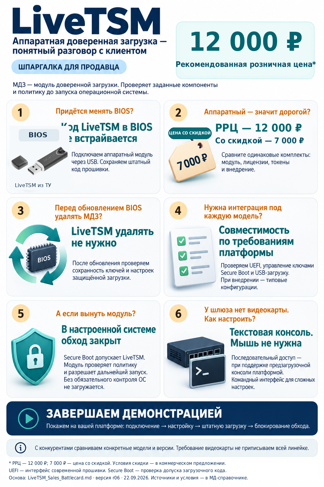
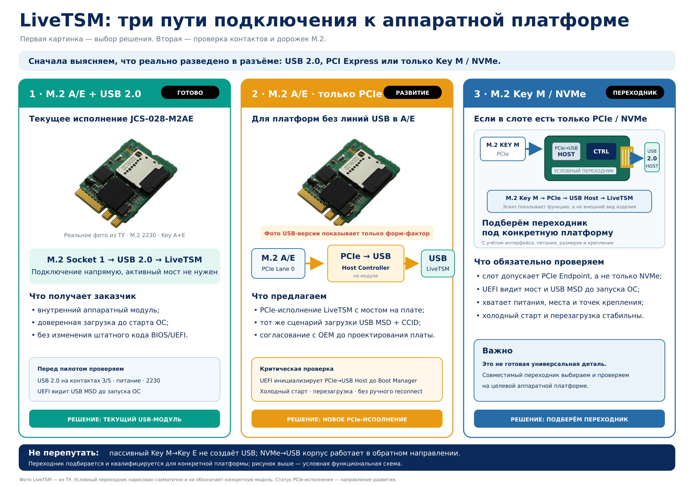
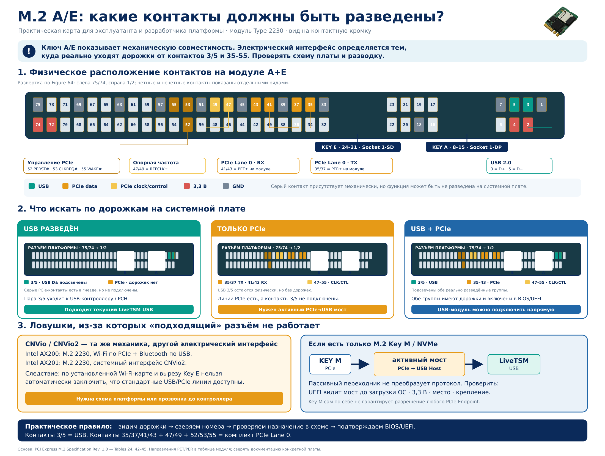
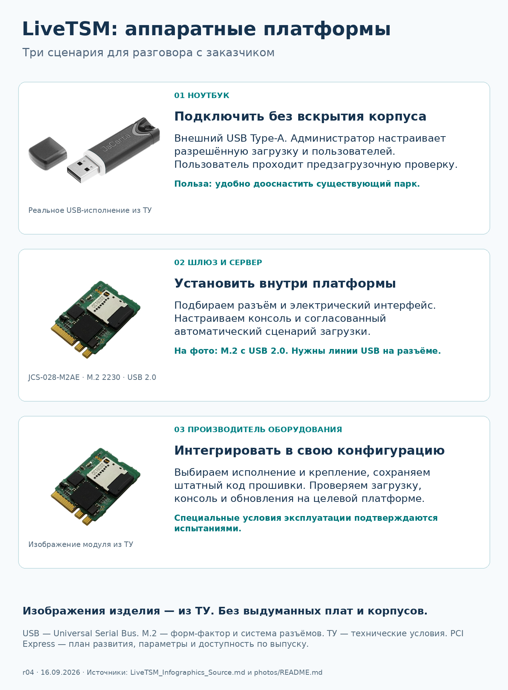
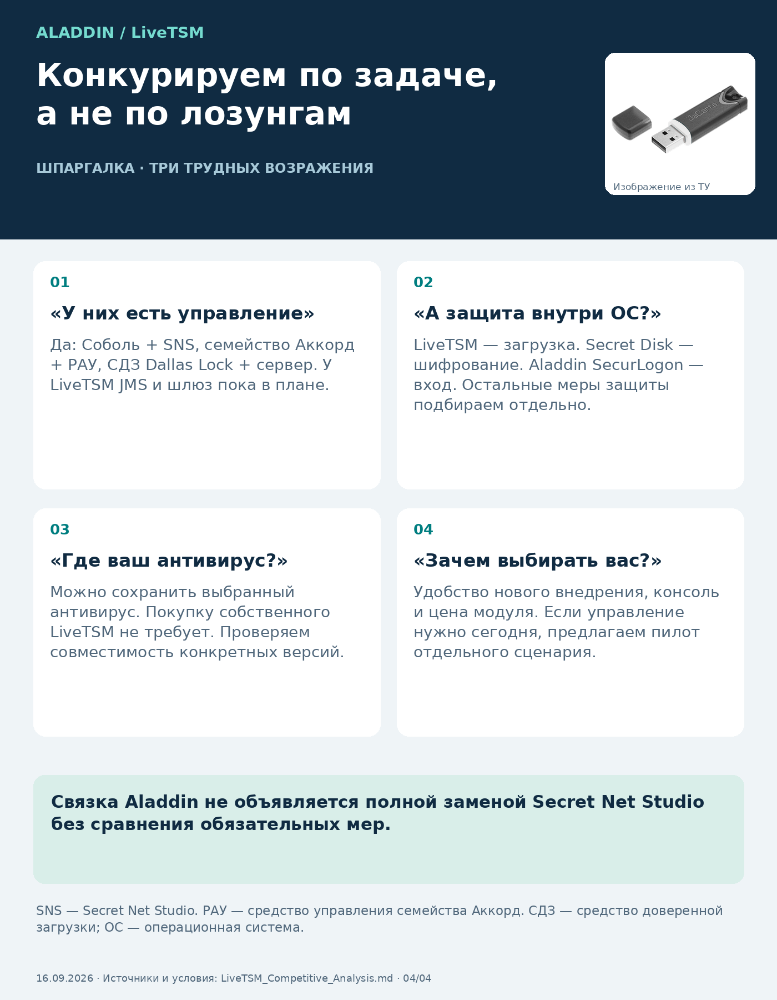

Что предлагаем и куда развивается LiveTSM
Два первых листа дают продавцу короткий контекст: что доступно сейчас и какие функции входят в план развития.


Как подключить LiveTSM к аппаратной платформе
Сначала выясняем, что реально разведено в разъёме: USB 2.0, PCI Express или только M.2 Key M / NVMe. После этого выбираем текущее исполнение, направление развития или переходник под конкретную платформу.

M.2 A/E и USB 2.0
Текущее M.2 2230 A+E исполнение. Нужны USB_D+ и USB_D- на контактах 3 и 5.
M.2 A/E только с PCIe
Требуется PCIe-исполнение с мостом PCIe-to-USB Host на модуле. Статус — направление развития.
Только Key M / NVMe
Подберём активный переходник и проверим питание, механику и раннюю инициализацию UEFI.
Какие контакты должны быть разведены
Карта предназначена для схемотехника, разработчика UEFI и внедренца. Она показывает физическое положение USB, PCIe Lane 0, питания и ключей A/E — именно так можно проверить разъём по схеме и трассировке платы.

{kind=link}
Где применяется решение
После выбора интерфейса возвращаемся к задаче заказчика: ноутбук без вскрытия корпуса, шлюз или сервер с внутренним модулем, интеграция в серийную платформу OEM.

Позиционирование и демонстрации

Короткие видеосценарии
Демонстрации без звука показывают сценарии для ноутбука и многофункционального сетевого шлюза.
Материалы для скачивания
Можно скачать весь безопасный публичный комплект одним ZIP или переслать заказчику и партнёру отдельные материалы.
{kind=link}
{kind=link}
{kind=link}
{kind=link}